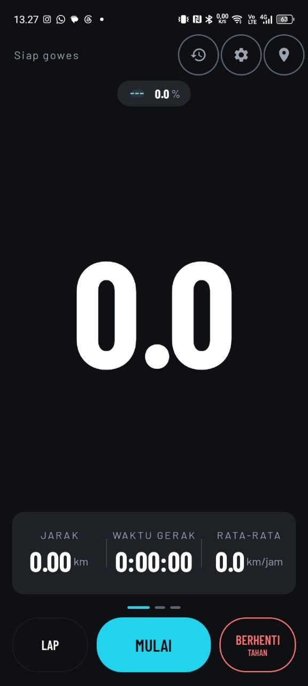

Aplikasi kecil yang kupakai tiap hari.
YTM Relay memutar YouTube Music di HP lama tanpa Play Services. Zylo mencatat gowes dengan peta, tanjakan, dan ekspor GPX. Dua-duanya kubangun sendiri, tanpa iklan dan tanpa pelacakan.


Aplikasi pertama
YTM Relay
Relay pribadi ke YouTube Music. Cukup satu server kecil, dan HP Android 4.4 bisa memutar lagu lagi tanpa Play Services dan tanpa login Google.
- Rilis
- GitHub Releases
- Android
- 4.4 ke atas
- Server
- milik sendiri
- Pustaka
- lokal, di HP

Aplikasi kedua
Zylo
Komputer gowes GPS. Kecepatan besar, peta live rute, navigasi layar penuh, dan ringkasan yang bisa dibagikan atau diekspor jadi GPX.
- Rilis
- GitHub Releases
- Android
- 6.0 ke atas
- Metrik
- 10, termasuk tanjakan
- Ekspor
- GPX siap Strava

Keduanya lahir dari kebutuhan sendiri. Xperia E1 di laci masih layak dipakai, dan aplikasi gowes yang menagih langganan untuk fitur sederhana terasa berlebihan.
Dibuat dan dirawat sendiri, Jawa Tengah
Ambil APK terbaru
Langsung dari GitHub Releases. Tidak ada pendaftaran, tidak ada akun, tidak ada iklan di dalam aplikasi.